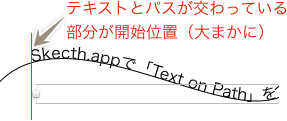

Sketch.app Advent Calender 2013 21日目の記事です。今回はパスに文字を沿わせる、Text on Pathについて解説していきます。
Sketchの基本。というSketch（Sketch 3）の基本操作にフォーカスした電子書籍をリリースしました。詳しくはこちらの「Sketchの基本。」のページをご覧ください。
この記事はSketch 2を元にした記事です。最新版の動作とは異なる可能性が高いため、参考程度にご覧ください。
大概のグラフィックツールについている機能ですが、もちろんSketch.appにも搭載されています。 ## 使い方 テキストオブジェクトと、それを沿わせるパスを準備します。パスはテキストオブジェクトの背面に配置しておきます。便宜上、線を着色していますが、透明でも大丈夫です。
テキストオブジェクトを選択し、［Edit］から「Text on Path」を選びます。

その後、テキストオブジェクトのバウンディングボックスが、パスのバウンディングボックスへかかるように移動させると、開始アンカーから終了アンカーに向けてテキストが流し込まれます。ちなみに、バウンディングボックスが重なればいいので、動かすのはどちらのオブジェクトでもよいです。
おおよそ、テキストオブジェクトの矩形とパスが交わったところから、テキストが流し込まれます。テキストオブジェクトのすぐ下にあるパスに沿うため、前後関係が入れ替わったりすると事故に繋がる可能性が高いので、とりあえずグループ化しておくのがオススメです。

テキストが一カ所に集まってしまう場合は、テキストオブジェクトの位置が悪いので、適当にドラッグして調整してください。テキストオブジェクトがうまく選択できない場合は、レイヤーパネルから選ぶとストレスが減ります。
また［Edit］→［Paths］にある、「Reverse Order」や回転などを利用してテキストの位置を調整できます。
ちなみに途中で改行しても、改行された行にもパスに沿って配置されます。パスのカーブによってはかなり文字がかぶりますが…